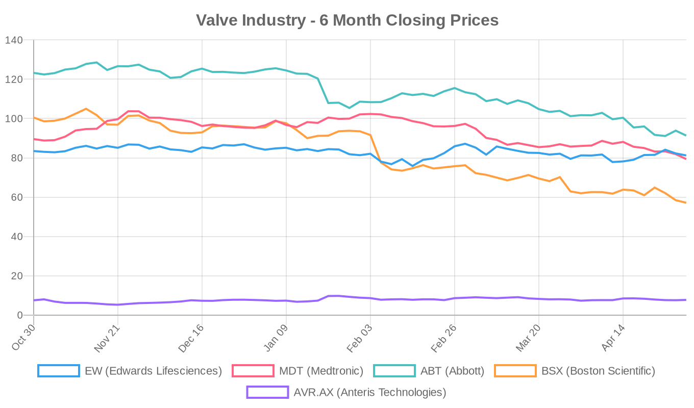
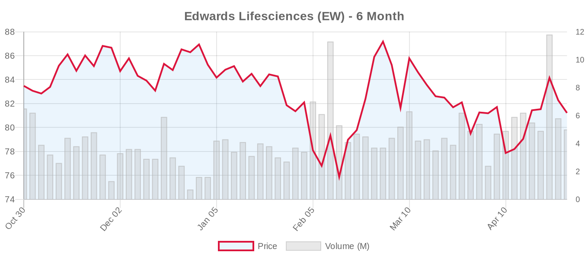
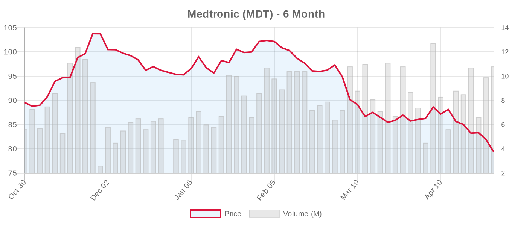
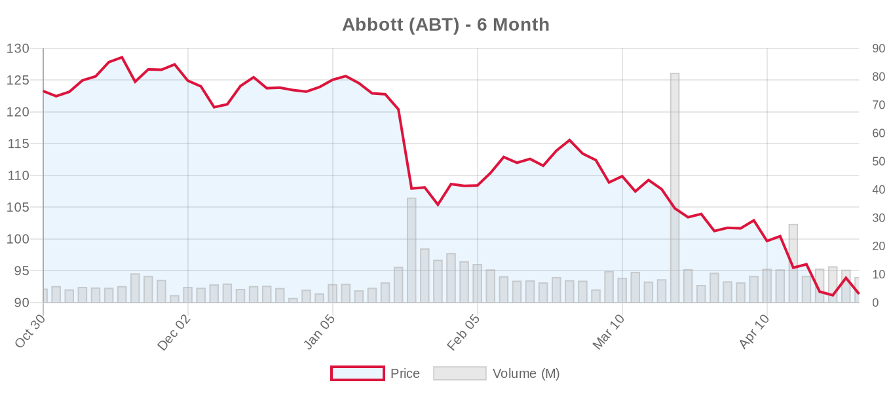
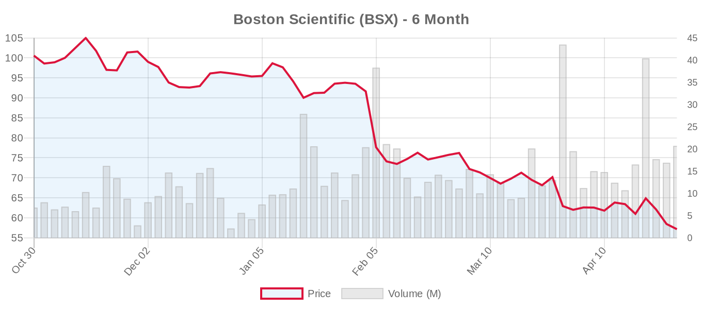
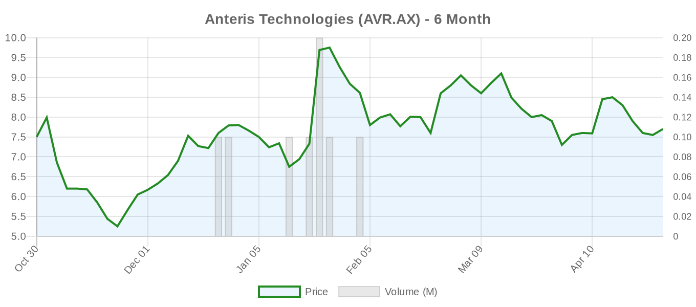

|
||||||||
|
April 30, 2026 By E. Nolan Beckett |
||||||||
|
||||||||
Executive SummaryA compelling new study from Circulation: Cardiovascular Interventions suggests that systematic ambulatory ECG monitoring after TAVR could dramatically reduce sudden cardiac death and life-threatening arrhythmic events — cutting the composite endpoint by 73% in the first year. Meanwhile, a French multicenter study highlights the sobering reality of TAVR explantation, with 16.1% 30-day mortality regardless of timing or valve type — a stark reminder that durability planning matters at the index procedure. In the tricuspid space, new data show that TR transcatheter edge-to-edge repair acutely improves right ventricular hemodynamics by redirecting blood flow forward, while a single-center analysis documents the rapid surge in tricuspid referrals following US regulatory approval of transcatheter devices. And a novel Chinese TEER system reports encouraging first-in-human results for functional mitral regurgitation. For clinicians navigating the post-TAVR surveillance landscape, today's monitoring study from the RECORD registry is the headline: Fischer et al. demonstrate that 14-day ambulatory ECG after discharge identified new atrial fibrillation in nearly 9% of patients — five-fold higher than the control group — and was associated with an adjusted HR of 0.27 for life-threatening cardiovascular events. All sudden deaths occurred in the unmonitored cohort. While this is observational and hypothesis-generating, it directly challenges the current heterogeneous post-TAVR surveillance approaches and may accelerate the call for standardized monitoring protocols. The TAV-explant data from Eid et al. meanwhile reinforce the ESC 2025 emphasis on lifetime management planning: with 62 patients across multiple French centers experiencing 16.1% operative mortality, the message is clear that preventing the need for explantation — through careful patient selection and anatomical planning at the index procedure — remains paramount. Today's Key Findings
Aortic Valve (TAVR/TAVI)Ambulatory ECG Monitoring After TAVR: A Potential Game-Changer for Post-Procedural Surveillance[NOTABLE] Fischer et al. present striking data from Circulation: Cardiovascular Interventions on systematic 14-day ambulatory ECG monitoring after TAVR. Among 1,217 consecutive patients discharged without a pacemaker, 211 received systematic monitoring (RECORD registry) while 1,006 served as historical controls. The monitored group had a 73% lower rate of the composite endpoint — sudden cardiac death, arrhythmic syncope/presyncope, or stroke — at 1 year (1.9% vs. 6.6%; aHR 0.27). Critically, all sudden death cases occurred in the unmonitored group, at a median of 96 days post-TAVR. New atrial fibrillation was detected in 8.9% of monitored patients (vs. 1.8%), leading to anticoagulation in 71% of those cases. Editorial perspective: These results are provocative but require careful interpretation. This is a non-randomized comparison with historical controls, and the higher prevalence of self-expandable valves in the control group (known to carry higher conduction disturbance rates) could confound results. The study also cannot distinguish whether monitoring prevented events or simply detected conditions earlier that would have been managed regardless. That said, the magnitude of effect and the biological plausibility — identifying AF for anticoagulation, catching high-grade AV block before syncope — make a compelling case for a randomized trial, which the authors appropriately call for. Current guidelines do not mandate post-TAVR ambulatory monitoring, and practice varies enormously. If validated, this could become standard of care. TAVR Explantation: Sobering Mortality Regardless of TimingEid et al. report a French multicenter retrospective study of 62 patients undergoing surgical TAV-explant, with 30-day mortality of 16.1%. Indications included bioprosthetic valve dysfunction (45.2%), infective endocarditis (21%), and procedural failure (33.9%). Notably, mortality did not differ by timing (early vs. intermediate vs. late) or by valve type (balloon-expandable vs. self-expanding). Concomitant aortic surgery was required in 18% of cases. The authors note that EuroSCORE II significantly underestimated operative risk — unsurprising given these scores were never designed for redo transcatheter-to-surgical operations. Editorial perspective: This study reinforces the ESC 2025 guidelines' emphasis on lifetime management at the index TAVR procedure. If explantation carries ~16% mortality — consistent with prior series reporting 12-17% — then every effort to avoid it through careful patient selection, anatomical planning for future valve-in-valve feasibility, and durability-conscious prosthesis choice is essential. This is especially relevant as TAVR expands into younger, lower-risk patients where reintervention probability increases. The data also highlight that current risk calculators are inadequate for this population. AI Body Composition Analysis Predicts Post-TAVR MortalityLiu et al. applied a validated U-Net deep learning model to pre-TAVR CT angiograms in 2,642 patients (median age 80) at the Mayo Clinic. Lower skeletal muscle area, subcutaneous and visceral adipose tissue, and skeletal muscle index were all independently associated with higher 3-year mortality after multivariable adjustment (all aHR ~0.83 per 1-SD increase, P≤0.001). Threshold analysis identified specific cutpoints (e.g., skeletal muscle <128 cm², SMI <41 cm²/m²) below which risk increased significantly. Editorial perspective: This is a well-powered single-center study that leverages imaging already being performed for TAVR planning. The concept of automated frailty assessment from routine CT is appealing — it removes the subjectivity inherent in clinical frailty scales and could be integrated into existing workflows. However, this remains a retrospective association study. The real question is whether body composition metrics add incremental discriminative value beyond established risk scores, and whether they would change management (e.g., aggressive prehabilitation, deferred intervention, or palliative pathway). Validation in external cohorts is needed. Non-ECG-Gated CT for TAVI Planning: Pragmatic Alternative or Compromise?Sanoussi et al. report on 194 consecutive TAVI patients planned using a non-ECG-gated, single-phase CTA protocol at a single Belgian center. All patients were successfully sized, with acceptable 30-day outcomes: 3.6% mortality, 1.5% stroke, 6.7% vascular complications, 3.1% new pacemaker implantation, and no severe paravalvular leak. ECG-gated CTA remains the reference standard, but this study suggests non-gated protocols may suffice in experienced hands. Editorial perspective: While intriguing for resource-limited settings, this is a small single-center retrospective study without direct comparison to gated CT. The lack of severe PVL is reassuring but doesn't tell us about subclinical mismatch or long-term valve hemodynamics. ECG gating provides superior aortic root measurements during specific cardiac phases — important for annular sizing precision. This may be most relevant in low-resource environments where gating isn't available, but it should not become an argument for cutting corners where the technology exists. Additional TAVR ReportsNagai et al. examined sex differences among 514 TAVR patients and found that while 1-year outcomes were similar, the predictors of cardiovascular events differed markedly by sex: in women, frailty, left atrial volume index, and relative wall thickness drove events, while in men, atrial fibrillation and smoking history were predictive. This supports sex-specific risk stratification strategies for TAVR candidates. Ballester Dolz et al. report the first documented case of central retinal artery occlusion after TAVI — a 78-year-old male with sudden painless monocular vision loss immediately post-procedure. While rare, this serves as a reminder that embolic complications of TAVI extend beyond cerebrovascular events. Keskin et al. describe successful transfemoral TAVR using a 26mm Evolut PRO+ for severe aortic regurgitation in a patient with a HeartMate III LVAD and small annulus (mean diameter 18.4mm). Of note, the ESC 2025 guidelines now include a Class IIb recommendation for TAVR in AR for inoperable patients with suitable anatomy — a niche but growing indication. Cieri et al. publish a commentary in IJC Heart & Vasculature calling for a multidimensional approach to TAVR patient management, while Olusan et al. review the current evidence on PROMs and frailty assessments before and after TAVI in Cureus, highlighting their growing role in patient-centered outcome evaluation. Sareen et al. report an instructive case of a 96-year-old woman with inherited Type 2A von Willebrand disease whose bleeding phenotype worsened due to acquired von Willebrand syndrome secondary to unrecognized severe aortic stenosis. TAVR resulted in rapid resolution — a reminder of the well-described Heyde syndrome and the systemic consequences of severe AS. SGLT2 Inhibitors After TAVI: Emerging SignalHamzah et al. publish a systematic review and meta-analysis in the European Journal of Clinical Pharmacology examining the therapeutic impact of SGLT2 inhibitors after TAVI. The full abstract is not yet available, but this aligns with growing interest — also highlighted by a TCTMD report today — in post-procedural pharmacotherapy optimization for TAVR patients with diabetes or obesity. Mitral Valve (MitraClip, PASCAL, TMVR)Clip2Edge: First-in-Human TEER System from ChinaWang et al. in Structural Heart report one-year outcomes of the Clip2Edge transcatheter edge-to-edge repair system (IasoCardiac Medical Technology, Shanghai) for functional MR in heart failure patients. While full data are limited in the abstract, the study demonstrates initial safety and efficacy, positioning this device as a potential alternative to MitraClip — currently the only FDA-approved TEER system for functional MR. Editorial perspective: The competitive landscape for TEER is intensifying globally. MitraClip (Abbott) dominates, and Edwards' PASCAL system is gaining share, but Chinese manufacturers are moving quickly. Whether the Clip2Edge offers meaningful differentiation in leaflet grasping mechanics, delivery system ergonomics, or cost remains to be seen. Given the ESC 2025 upgrade of TEER for ventricular secondary MR to Class I (LOE A), the addressable market is expanding — and so is the commercial appetite. Any new entrant will need to demonstrate non-inferiority to established devices in rigorous trials, not just first-in-human feasibility. Tricuspid Valve (TriClip, TTVR)Hemodynamic Proof of Concept: Tricuspid TEER "Economizes" RV Work[NOTABLE] Reil et al. in the Journal of the American Heart Association provide the first invasive pressure-volume loop analysis of acute hemodynamic changes during tricuspid TEER in 9 patients with severe TR (grades III-IV). Using a 7-electrode conductance catheter calibrated against 3D echo, they demonstrate that successful repair increased forward stroke volume (41→51 mL, P=0.004) while preserving contractility (end-systolic elastance unchanged) and reducing preload (RVEDV 145→131 mL, P=0.01; RVEDP 9→7 mmHg, P=0.03). RV afterload and stroke work were unchanged. Editorial perspective: This is a small but elegant mechanistic study that answers a fundamental question: does tricuspid TEER help the right ventricle, or simply mask regurgitation? The answer appears to be genuine unloading with improved forward flow — a hemodynamic "economization" of myocardial work. This supports the ESC 2025 Class IIa recommendation for transcatheter TR treatment. However, n=9 means these are proof-of-concept findings, and whether acute hemodynamic improvement translates to sustained clinical benefit (reduced hospitalizations, improved survival) requires the larger randomized datasets from TRILUMINATE, Tri.Fr, CLASP II TR, and TRISCEND II. Regulatory Approval Triggers TR Referral SurgeGarcia et al. in Structural Heart document the real-world impact of US regulatory approval of transcatheter tricuspid devices: in the first year after approval, their center observed significant increases in TR referrals, advanced cardiac imaging, and procedural volumes. This single-center analysis is a bellwether for national trends. Editorial perspective: This mirrors the post-MitraClip approval experience in mitral regurgitation. The concern — articulated by critics like Badhwar and Chikwe — is that regulatory approval creates demand that outpaces the evidence base. The ESC 2025 Class IIa recommendation is based on trials showing quality-of-life improvements and reduced HF hospitalizations, but no mortality benefit has been demonstrated for transcatheter TR therapy. Patient selection is critical: the guidelines specify no severe RV dysfunction or pre-capillary pulmonary hypertension. Whether the referral surge will adhere to these boundaries or lead to indication creep remains to be seen. Postoperative TR After Left-Sided Valve Surgery: An Independent ThreatDregoesc et al. in Open Heart analyze 2,487 patients from Massachusetts General Hospital who underwent left-sided valve surgery with less than moderate preoperative TR. Over median 3-year follow-up, postoperative TR independently predicted the composite of death and HF hospitalization (aHR 1.29 per grade increase, P<0.001), even after adjusting for RV remodeling. An increase of ≥2 TR grades occurred in 12.5% of patients and was associated with adverse outcomes. Risk factors for TR progression included age, sex, prior MI, CABG, AF, and RV remodeling. Editorial perspective: This large single-center study reinforces both guidelines' emphasis on concomitant tricuspid intervention during left-sided valve surgery. Both ACC/AHA 2020 and ESC 2025 recommend concomitant TV surgery for severe TR (Class I) and consider it for moderate TR or annular dilation (IIa). The finding that 12.5% of patients with initially mild TR progress to significant disease post-operatively suggests the thresholds for concomitant intervention may need to be even lower. The too-late-referral problem that plagues isolated TR surgery starts here. Device & TechnologyThe Clip2Edge TEER system (IasoCardiac Medical Technology, Shanghai) joins a growing field of MitraClip competitors. With the GeminiOne system (Sierra Valve) also in early clinical trials, and PASCAL (Edwards) in active commercial use, the transcatheter mitral repair market is diversifying rapidly. The Hydra Transcatheter Aortic Valve System (Sahajanand Medical Technologies / Meril Life Sciences) continues enrolling across multiple European registries — Denmark (n=50), Italy (n=500), and UK (n=250) — as this Indian-manufactured THV seeks to establish a European evidence base. Industry & MarketNews reports from India highlight TAVI's expanding global reach: TheWire.in describes TAVI as a "life-saving breakthrough" now available for Indian aortic stenosis patients. Meanwhile, a Cureus case report of acute Type A aortic dissection after TAVI requiring a Bentall procedure serves as a sobering reminder of catastrophic procedural complications. Financial AnalysisThe structural heart sector endured a broadly negative session on April 29, with all major US-listed medtech names declining. The sell-off appears tied to broader market risk-off sentiment rather than sector-specific catalysts, though several company-specific narratives deserve attention. Edwards Lifesciences remains the sector bellwether, and its valuation is under the microscope ahead of Q3 2026 earnings in July. Multiple financial outlets — including SimplyWallSt and Yahoo Finance — are questioning whether the trailing P/E of 43.9 is justified given mixed near-term growth visibility. The upcoming BofA Securities Healthcare Conference presentation could help clarify Edwards' growth narrative around SAPIEN, PASCAL, and EVOQUE. Vanguard's updated 7.54% stake (43.48M shares) signals continued institutional confidence despite the premium valuation. The divergence between Edwards' relative stability (-2.7% over 6 months) and Boston Scientific's sharp decline (-43.2% over 6 months) is the most striking feature of today's landscape. BSX, which has broader exposure beyond structural heart, appears to be suffering from macroeconomic headwinds and possibly tariff-related supply chain concerns that disproportionately affect diversified medtech. Abbott's 25.9% six-month decline follows a similar pattern. The structural heart pure-play (Edwards) has been relatively insulated, suggesting the market may be pricing in resilience for the TAVR/TMVR/TTVR growth narrative specifically. Valve Industry Stocks Edwards Lifesciences (EW)
Medtronic (MDT)
Abbott Laboratories (ABT)
Boston Scientific (BSX)
Anteris Technologies (AVR.AX)
Private Companies of Note: JenaValve Technology (aortic regurgitation TAVR), J Valve Technology (China-based AR/AS TAVR), and Meril Life Sciences (Myval TAVR, Hydra THV) remain private. Meril's Hydra valve continues expanding its European registry footprint with trials active across Denmark, Italy, and the UK. Market Outlook: Today's broad sell-off hits structural heart names at a vulnerable moment — trading near 52-week lows for MDT, ABT, and BSX. The sector fundamentals remain strong: TAVR volumes growing with ESC 2025's expanded age threshold to ≥70, TEER now Class I for ventricular SMR, and transcatheter tricuspid entering the mainstream. But macroeconomic uncertainty, tariff concerns, and premium valuations (particularly EW at 43.9x trailing) keep investors cautious. The upcoming earnings cycle (MDT June 3, ABT July 16, BSX July 22, EW July 23) will be critical for the structural heart growth story. Clinical Trial UpdatesAortic Valve Trials
Mitral Valve — Repair (TEER)
Mitral Valve — Replacement (TMVR)
Tricuspid Valve — Repair
Tricuspid Valve — Replacement
Other Relevant Trials
Social & Conference HighlightsEdwards Lifesciences announced it will present at the BofA Securities 2026 Health Care Conference. Watch for updates on PASCAL market share, EVOQUE tricuspid commercial launch trajectory, and SAPIEN M3 TMVR progress. Given the valuation debate surrounding EW, management guidance on structural heart growth acceleration will be closely scrutinized. Looking Ahead: Tomorrow we'll be watching for Medtronic's structural heart pipeline updates as their June 3 earnings approach, and for further data from the rapidly growing tricuspid intervention field. The post-TAVR monitoring study from today deserves a randomized trial — and fast. The days of discharging TAVR patients without standardized arrhythmia surveillance may be numbered. — E. Nolan Beckett | The Valve Wire |
||||||||
|
|
||||||||
|
||||||||
|